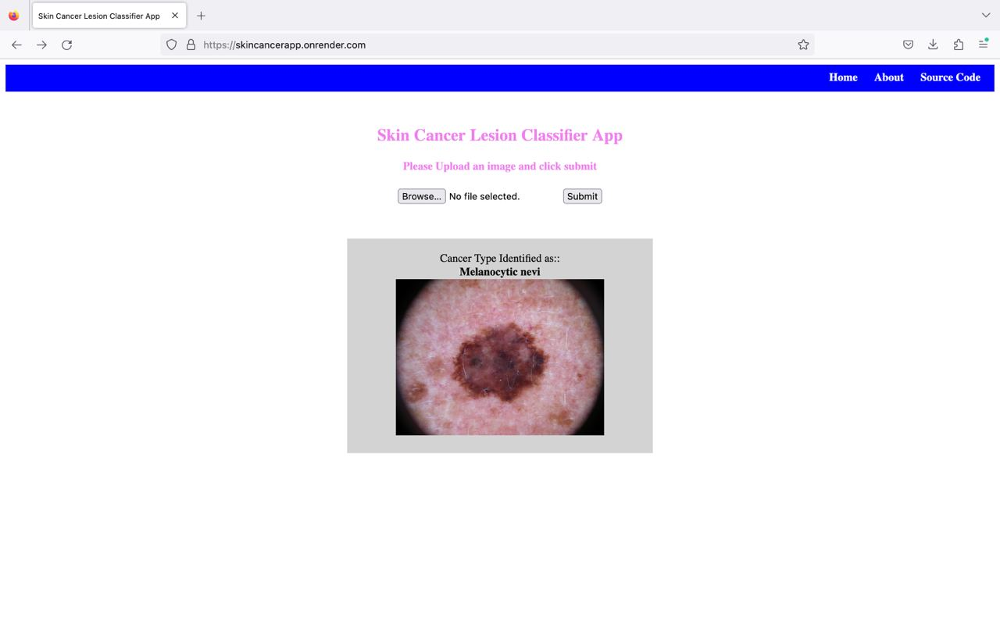

Deep Learning Based Web Application for Skin Cancer Classification
Deep Learning Based Web Application for Skin Cancer Classification
Deep Learning, Python
John Torfi
Hello! My name is JohnI am a highly skilled and analytical data analyst with a strong background in computer science and software engineering. With a Master's degree in Software Engineering and over one year of experience as a freelance data analyst, I specialize in working with financial and healthcare data. I am passionate about leveraging data to drive data-driven decision-making and contribute to business growth. With expertise in Excel, Power BI, SQL, and Python, I am adept at gathering, cleaning, and analyzing data to deliver valuable insights.
experienced freelance data analyst adept at collaborating with diverse teams of clients and stakeholders. Recognizing the significance of teamwork, I effectively communicate, actively listen, and contribute expertise to foster collaboration and harmony in achieving goals.
as a data analyst,I handle complex problems in diverse datasets, utilizing strong problem-solving skills from my academic background in computer science and software engineering. I excel at breaking down problems, employing logic and analytics to identify effective solutions.
as data analyst, I effectively communicate complex insights to stakeholders. Through client interactions, I understand data requirements and present analysis results clearly. I tailor communication style, simplifying information for maximum comprehension and impact.
Deep Learning, Python
Machine learning,Python
Power BI
Excel
Python
Html,Css,JavaScript
Thanks for visiting! Please do not hesitate to contact me. You can contact me using any of the below methods and I will get back to you as soon as possible.